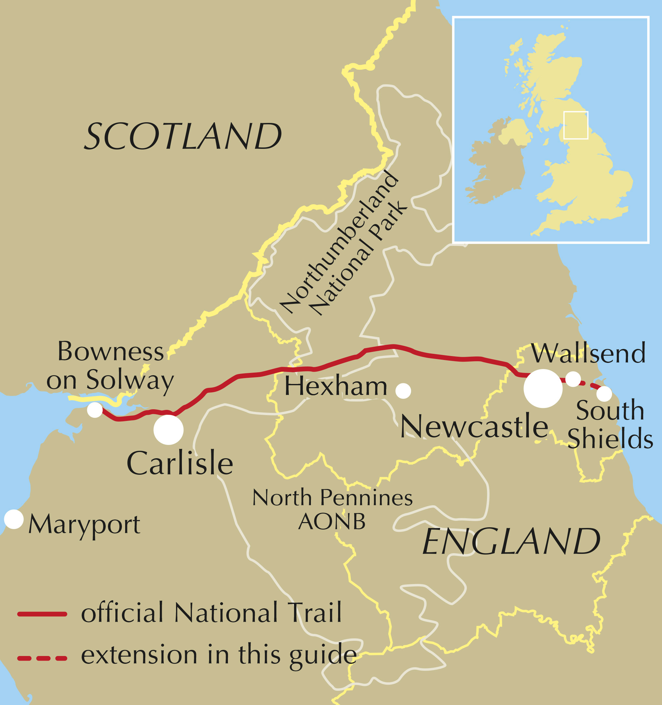
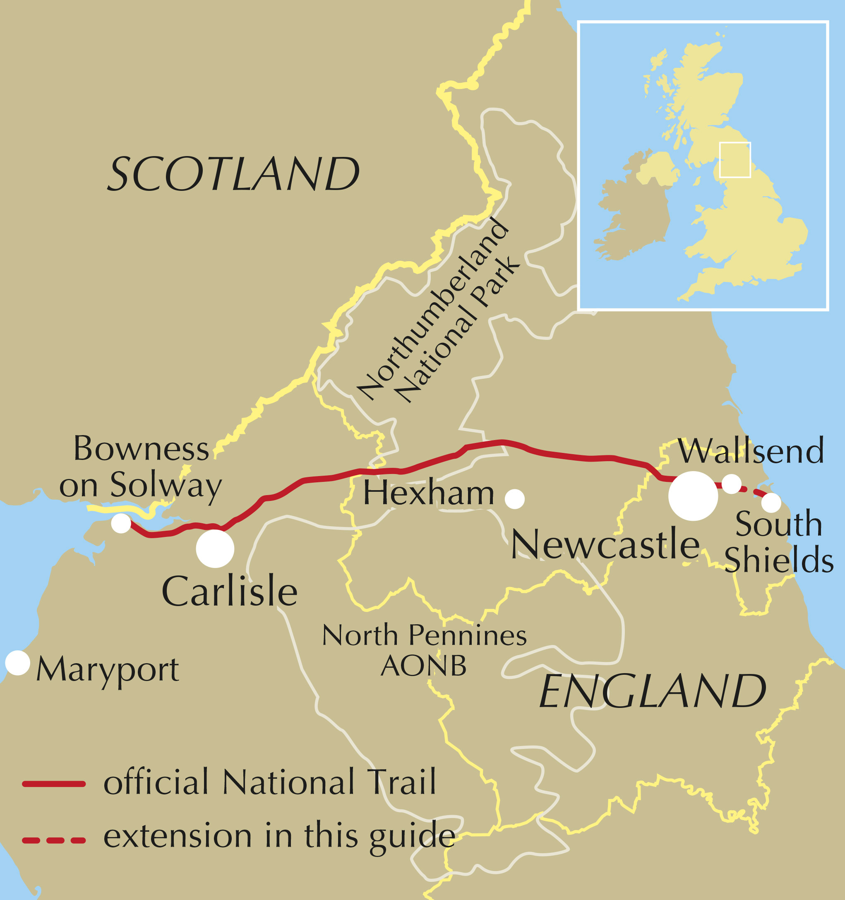

They've built you high, a barrier strong,
To keep them out, to hold them long.
From Rome, they came with iron will,
To guard the North, to stand still.
You kept the tribes from crossing through,
And walled in peace, but danger too.
The soldiers marched with steady tread,
While whispers echoed, of those who fled.
Hadrian’s Wall, you stand so tall,
A wall of stone that sees it all.
Built by Rome, but met with doubt,
A wall of power, keeping out.
The Britons fought, but they could not win,
Against the might of Rome’s iron skin.
Yet in your shadow, life still grew,
Through every storm, and every dew.
Some loved you for the safety found,
But others saw you as a wound,
A line drawn deep between the land,
In a war they didn’t understand.
Hadrian’s Wall, you stand so tall,
A wall of stone that sees it all.
Built by Rome, but met with doubt,
A wall of power, keeping out.
If you stood now, what would they say?
Would they see you in the same old way?
Would they have built you in the past,
Or let the storm roll over fast?
Hadrian’s Wall, you stand so tall,
A wall of stone that sees it all.
Built by Rome, but met with doubt,
A wall of power, keeping out.
 
